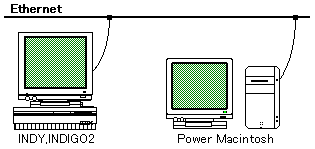

★SGL User's Manual
★開発環境
★SGL User's Manual
★開発環境
| ツール | 対応機種 | 製 品 名 | 備 考 | |
|---|---|---|---|---|
| SGI | Mac | |||
| ３Ｄツール | ○ | SOFTIMAGE 3D Saturn Toolkit | セガ推奨品 | |
| ○ | ShadeIII for SEGASATURN | セガ推奨品 | ||
| ○ | form Z | |||
| ２Ｄツール | ○ | ○ | Adobe Photoshop | セガ推奨品 |
| ○ | ○ | Adobe Illustrator | ||
| ○ | Pixel Professional | |||
| ○ | ○ | Digitizer | セガ推奨ツール | |
| データフィルター | ○ | DeBabelizer | セガ推奨品 | |
| ○ | ○ | Adobe Photoshop | プラグイン | |
ツ ー ル | 機 種 名 | 備 考 |
|---|---|---|
| 開発ホスト | INDY,INDIGO2 | CPU R4600SC,R4400SC,RAM 64MB以上,HDD 1GB以上,24bitフルカラー |
Power Macintosh | CPU Power PC601,RAM 16MB以上,HDD 500MB以上,24bitフルカラービデオボード |
図3-1 セガの推奨するデザイナー向けハードウェア環境

★SGL User's Manual
★開発環境